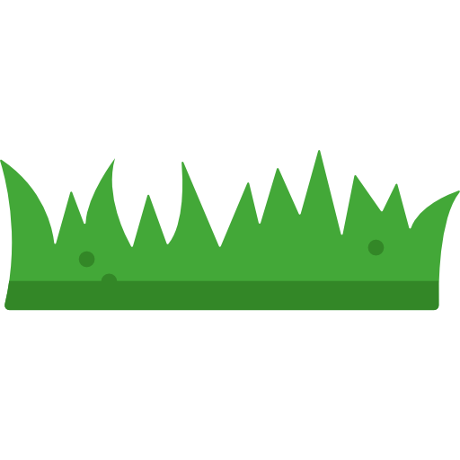

გამარჯობა კეტო.
გილოცავ ჩვენს anniversary-ის. ძალიან მიყვარხარ და მინდა, რომ უკბილო სიბერემდე და იმის მერეც, ვულოცოთ ერთმანეთს
anniversary-ები.
ჩემი შენდამი სიყვარულის სიმბოლო არის ეს (html; css; js)-ით შექმნილი ვარდი, რომლიც მხოლოდ ერთია მსოფლიოში და ის შენ გეკუთვნის.
ამ ციფრულ ვარდს ვუწოდებ "კეტოს ვარდს" და ის არ ჰგავს სხვა ვარდებს, მაგალითად იმას, მაგიდაზე რომ დევს და რამდენიმე დღეში დაჭკნება და გაქრება.
კეტოს ვარდი უცვლელი და ურყევია, დარშიც და ავდარშიც(დააჭირე ვარდს!!!)
